mn create-app --features=kafka,graalvm,reactor,testcontainers example.micronaut.chess-game --build=gradle --lang=javaTable of Contents
- 1. Getting Started
- 2. What You Will Need
- 3. Solution
- 4. Writing the Application
- 5. Kafka
- 6. Running the application
- 7. Moving to Oracle Cloud
- 8. Local Testing with Cloud Resources
- 9. Writing Tests
- 10. Deploy to OCI
- 11. Generate Micronaut Application Native Executables with GraalVM
- 12. Next Steps
- 13. License
Oracle Cloud Streaming and the Micronaut Framework - Event-Driven Applications at Scale
Use Oracle Cloud Streaming to communicate between your Micronaut applications.
Authors: Burt Beckwith
Micronaut Version: 4.9.1
1. Getting Started
In this guide, we will create two Micronaut microservices written in Java that will use Oracle Cloud Streaming to communicate with each other in an asynchronous and decoupled way.
2. What You Will Need
To complete this guide, you will need the following:
-
Some time on your hands
-
A decent text editor or IDE
-
JDK 11 or greater installed with
JAVA_HOMEconfigured appropriately -
An Oracle Cloud account (create a free trial account at signup.oraclecloud.com)
-
Oracle Cloud CLI installed with local access to Oracle Cloud configured by running
oci setup config -
Docker and Docker Compose installed if you will be running Kafka in Docker and for running tests.
3. Solution
We recommend that you follow the instructions in the next sections and create the application step by step. However, you can go right to the completed example.
-
Download and unzip the source
4. Writing the Application
The microservices will use Oracle Cloud Streaming and the Kafka API to send and receive messages. The messages will represent chess gameplay events, including game start and end and each move.
The microservices are:
-
chess-game- Has a simple JavaScript and Ajax UI that renders a variable number of chess games that will be auto-played to generate many events -
chess-listener- Receives the chess event messages and persists them to a database
4.1. chess-game Microservice
Create the chess-game microservice using the Micronaut Command Line Interface or with Micronaut Launch.
If you don’t specify the --build argument, Gradle with the Kotlin DSL is used as the build tool. If you don’t specify the --lang argument, Java is used as the language.If you don’t specify the --test argument, JUnit is used for Java and Kotlin, and Spock is used for Groovy.
|
If you use Micronaut Launch, select Micronaut Application as application type and add the kafka, graalvm, reactor, and testcontainers features.
The previous command creates a directory named chess-game and a Micronaut application inside it with default package example.micronaut.
In addition to the dependencies added by the testcontainers feature, we also need a test dependency for Kafka in Testcontainers, along with one for the Awaitility library:
build.gradle
testImplementation("org.testcontainers:kafka")
testImplementation("org.awaitility:awaitility:4.2.2")4.1.1. DTOs
Create an enum for the chess players:
chess-game/src/main/java/example/micronaut/chess/dto/Player.java
package example.micronaut.chess.dto;
import com.fasterxml.jackson.annotation.JsonValue;
public enum Player {
WHITE("w"),
BLACK("b");
private final String color;
Player(String color) {
this.color = color;
}
@JsonValue
public String toString() {
return color;
}
}Create a GameDTO data-transfer object to represent game data:
chess-game/src/main/java/example/micronaut/chess/dto/GameDTO.java
package example.micronaut.chess.dto;
import com.fasterxml.jackson.annotation.JsonTypeInfo;
import io.micronaut.core.annotation.Creator;
import io.micronaut.core.annotation.Introspected;
import io.micronaut.core.annotation.NonNull;
import io.micronaut.core.annotation.Nullable;
import jakarta.validation.constraints.NotNull;
import jakarta.validation.constraints.Size;
import static com.fasterxml.jackson.annotation.JsonTypeInfo.Id.NAME;
@Introspected (1)
@JsonTypeInfo(use = NAME, property = "_className") (2)
public class GameDTO {
@Size(max = 36)
@NotNull
private final String id;
@Size(max = 255)
@Nullable
private final String blackName;
@Size(max = 255)
@Nullable
private final String whiteName;
private final boolean draw;
@Size(max = 1)
private final Player winner;
@Creator (3)
public GameDTO(@NonNull String id,
@Nullable String blackName,
@Nullable String whiteName,
boolean draw,
@Nullable Player winner) {
this.id = id;
this.blackName = blackName;
this.whiteName = whiteName;
this.draw = draw;
this.winner = winner;
}
public GameDTO(@NonNull String id,
@NonNull String blackName,
@NonNull String whiteName) {
this(id, blackName, whiteName, false, null);
}
public GameDTO(@NonNull String id,
boolean draw,
@Nullable Player winner) {
this(id, null, null, draw, winner);
}
@NonNull
public String getId() {
return id;
}
@Nullable
public String getBlackName() {
return blackName;
}
@Nullable
public String getWhiteName() {
return whiteName;
}
public boolean isDraw() {
return draw;
}
@Nullable
public Player getWinner() {
return winner;
}
}| 1 | Declare the @Serdeable annotation at the type level in your source code to allow the type to be serialized or deserialized. |
| 2 | Annotate with @JsonTypeInfo to include the class name without package in the "_className" property |
| 3 | Annotate with @Creator to indicate the constructor to use when deserializing from JSON |
Create a GameStateDTO data-transfer object to represent game move data:
chess-game/src/main/java/example/micronaut/chess/dto/GameStateDTO.java
package example.micronaut.chess.dto;
import com.fasterxml.jackson.annotation.JsonTypeInfo;
import io.micronaut.core.annotation.Introspected;
import io.micronaut.core.annotation.NonNull;
import jakarta.validation.constraints.NotNull;
import jakarta.validation.constraints.Size;
import static com.fasterxml.jackson.annotation.JsonTypeInfo.Id.NAME;
/**
* DTO for <code>GameState</code> entity.
*/
@Introspected (1)
@JsonTypeInfo(use = NAME, property = "_className") (2)
public class GameStateDTO {
@Size(max = 36)
@NotNull
private final String id;
@Size(max = 36)
@NotNull
private final String gameId;
@Size(max = 1)
@NotNull
private final Player player;
@Size(max = 100)
@NotNull
private final String fen;
@NotNull
private final String pgn;
@Size(max = 10)
@NotNull
private final String move;
public GameStateDTO(@NonNull String id,
@NonNull String gameId,
@NonNull Player player,
@NonNull String move,
@NonNull String fen,
@NonNull String pgn) {
this.id = id;
this.gameId = gameId;
this.player = player;
this.move = move;
this.fen = fen;
this.pgn = pgn;
}
@NonNull
public String getId() {
return id;
}
@NonNull
public String getGameId() {
return gameId;
}
@NonNull
public Player getPlayer() {
return player;
}
@NonNull
public String getFen() {
return fen;
}
@NonNull
public String getPgn() {
return pgn;
}
@NonNull
public String getMove() {
return move;
}
}| 1 | Declare the @Serdeable annotation at the type level in your source code to allow the type to be serialized or deserialized. |
| 2 | Annotate with @JsonTypeInfo to include the class name without package in the "_className" property |
4.1.2. GameReporter
Create a GameReporter Kafka client to send chess-related messages:
chess-game/src/main/java/example/micronaut/chess/GameReporter.java
package example.micronaut.chess;
import example.micronaut.chess.dto.GameDTO;
import example.micronaut.chess.dto.GameStateDTO;
import io.micronaut.configuration.kafka.annotation.KafkaClient;
import io.micronaut.configuration.kafka.annotation.KafkaKey;
import io.micronaut.configuration.kafka.annotation.Topic;
import io.micronaut.core.annotation.NonNull;
import reactor.core.publisher.Mono;
@KafkaClient (1)
public interface GameReporter {
@Topic("chessGame") (2)
@NonNull
Mono<GameDTO> game(@NonNull @KafkaKey String gameId, (3) (4)
@NonNull GameDTO game);
@Topic("chessGameState") (2)
@NonNull
Mono<GameStateDTO> gameState(@NonNull @KafkaKey String gameId, (3) (4)
@NonNull GameStateDTO gameState);
}| 1 | Annotate the class with @KafkaClient to declare it as a Kafka message producer; the Micronaut framework will generate the sending code at compile time |
| 2 | Annotate the method with @Topic and specify the topic name |
| 3 | By returning a reactive type, the Micronaut framework will use non-blocking code to send the message |
| 4 | Use the Game primary key as the Kafka partition key |
4.1.3. GameController
Create a GameController class to contain Ajax endpoints for the front end:
chess-game/src/main/java/example/micronaut/chess/GameController.java
package example.micronaut.chess;
import example.micronaut.chess.dto.Player;
import example.micronaut.chess.dto.GameDTO;
import example.micronaut.chess.dto.GameStateDTO;
import io.micronaut.http.annotation.Controller;
import io.micronaut.http.annotation.PathVariable;
import io.micronaut.http.annotation.Post;
import io.micronaut.http.annotation.Status;
import io.micronaut.scheduling.TaskExecutors;
import io.micronaut.scheduling.annotation.ExecuteOn;
import reactor.core.publisher.Mono;
import java.util.UUID;
import static io.micronaut.http.HttpStatus.CREATED;
import static io.micronaut.http.HttpStatus.NO_CONTENT;
import static io.micronaut.http.MediaType.APPLICATION_FORM_URLENCODED;
import static io.micronaut.http.MediaType.TEXT_PLAIN;
@Controller("/game") (1)
@ExecuteOn(TaskExecutors.BLOCKING) (2)
class GameController {
private final GameReporter gameReporter;
GameController(GameReporter gameReporter) {
this.gameReporter = gameReporter;
}
@Post(value = "/start", (3)
consumes = APPLICATION_FORM_URLENCODED, (4)
produces = TEXT_PLAIN) (5)
@Status(CREATED) (6)
Mono<String> start(String b, (7)
String w) {
GameDTO game = new GameDTO(UUID.randomUUID().toString(), b, w); (8)
return gameReporter.game(game.getId(), game).map(gameDTO -> game.getId()); (9)
}
@Post(value = "/move/{gameId}", (10)
consumes = APPLICATION_FORM_URLENCODED) (11)
@Status(CREATED) (12)
void move(@PathVariable String gameId,
Player player,
String move,
String fen,
String pgn) {
GameStateDTO gameState = new GameStateDTO(UUID.randomUUID().toString(),
gameId, player, move, fen, pgn);
gameReporter.gameState(gameId, gameState).subscribe(); (13)
}
@Post("/checkmate/{gameId}/{player}") (14)
@Status(NO_CONTENT) (15)
void checkmate(@PathVariable String gameId,
@PathVariable Player player) {
GameDTO game = new GameDTO(gameId, false, player);
gameReporter.game(gameId, game).subscribe(); (16)
}
@Post("/draw/{gameId}") (17)
@Status(NO_CONTENT) (18)
void draw(@PathVariable String gameId) {
GameDTO game = new GameDTO(gameId, true, null);
gameReporter.game(gameId, game).subscribe(); (19)
}
}| 1 | The class is defined as a controller with the @Controller annotation mapped to the path /game. |
| 2 | It is critical that any blocking I/O operations (such as fetching the data from the database) are offloaded to a separate thread pool that does not block the Event loop. |
| 3 | The method accepts HTTP POST requests to indicate a new game has started |
| 4 | The method accepts encoded form data (the two players' names) |
| 5 | The response will be plain text and contain the ID of the persisted Game |
| 6 | Send a "Created" (201) status to indicate a Game was persisted |
| 7 | Return a reactive type to configure a reactive response |
| 8 | Assign the game’s primary key as a UUID |
| 9 | Use the GameReporter to send a Kafka message with new game data |
| 10 | The method accepts HTTP POST requests to indicate a move has occurred |
| 11 | The method accepts encoded form data (the move information) |
| 12 | Send a "Created" (201) status to indicate a GameState was persisted |
| 13 | Use the GameReporter to send a Kafka message with game move data |
| 14 | The method accepts HTTP POST requests to indicate the game ended with a checkmate |
| 15 | Send a "No Content" (204) status to indicate success and no response body |
| 16 | Use the GameReporter to send a Kafka message that the game ended in a checkmate |
| 17 | The method accepts HTTP POST requests to indicate the game ended with a draw |
| 18 | Send a "No Content" (204) status to indicate success and no response body |
| 19 | Use the GameReporter to send a Kafka message that the game ended in a draw |
4.1.4. Development environment
Modify the Application class to use dev as a default environment:
The Micronaut framework supports the concept of one or many default environments. A default environment is one that is only applied if no other environments are explicitly specified or deduced.
chess-game/src/main/java/example/micronaut/Application.java
package example.micronaut;
import io.micronaut.runtime.Micronaut;
import static io.micronaut.context.env.Environment.DEVELOPMENT;
public class Application {
public static void main(String[] args) {
Micronaut.build(args)
.mainClass(Application.class)
.defaultEnvironments(DEVELOPMENT)
.start();
}
}Delete the kafka.bootstrap.servers config option from application.properties and move it to application-dev.properties.
Create src/main/resources/application-dev.properties. The Micronaut framework applies this configuration file only for the dev environment.
chess-game/src/main/resources/application-dev.properties
(1)
kafka.bootstrap.servers=localhost:9092| 1 | Use local Kafka in the development environment |
4.1.5. Static Resources
Update application.properties to add static resource configuration:
chess-game/src/main/resources/application.properties
(1)
micronaut.router.static-resources.default.paths=classpath:public| 1 | Configure the Framework to look for static resources in src/main/resources/public. |
4.1.6. UI Resources
Create index.html with the simple chess game UI:
chess-game/src/main/resources/public/index.html
<!doctype html>
<html lang="en">
<head>
<meta charset="utf-8">
<meta http-equiv="X-UA-Compatible" content="IE=edge">
<title>Micronaut Chess Multi</title>
<meta name="viewport" content="width=device-width, initial-scale=1">
<link rel="shortcut icon" type="image/png" href="favicon-32x32.png">
<link rel="stylesheet"
href="https://unpkg.com/@chrisoakman/chessboardjs@1.0.0/dist/chessboard-1.0.0.min.css"
integrity="sha384-q94+BZtLrkL1/ohfjR8c6L+A6qzNH9R2hBLwyoAfu3i/WCvQjzL2RQJ3uNHDISdU"
crossorigin="anonymous">
<style>
.gamesRow {
width: 100%;
margin: 0 auto;
}
.gameContainer {
display: inline-block;
}
</style>
</head>
<body>
<div id="counts">
<div>
<label for="rowCount">Rows: </label><input type="number" value="1" min="1" max="10" id="rowCount">
</div>
<div>
<label for="gamesPerRow">Games per row: </label><input type="number" value="1" min="1" max="10" id="gamesPerRow">
</div>
<div>
<label for="playDelay">Play delay milliseconds: </label><input type="number" value="5" min="1" id="playDelay">
</div>
<div>
<button id="startButton">START</button>
</div>
</div>
<div id="gamesContainer"></div>
<script src="https://code.jquery.com/jquery-3.5.1.min.js"
integrity="sha384-ZvpUoO/+PpLXR1lu4jmpXWu80pZlYUAfxl5NsBMWOEPSjUn/6Z/hRTt8+pR6L4N2"
crossorigin="anonymous"></script>
<script src="https://unpkg.com/@chrisoakman/chessboardjs@1.0.0/dist/chessboard-1.0.0.min.js"
integrity="sha384-8Vi8VHwn3vjQ9eUHUxex3JSN/NFqUg3QbPyX8kWyb93+8AC/pPWTzj+nHtbC5bxD"
crossorigin="anonymous"></script>
<script src="https://cdnjs.cloudflare.com/ajax/libs/chess.js/0.12.0/chess.min.js"
integrity="sha512-ujGsB4vTyNcSuViwM2DJ0+G2BIViQJl2rVBZBekStznA9Hq96+Wd9+jwu9zlttp0U2/9CYhgR7pOt2j+E6yewg=="
crossorigin="anonymous" referrerpolicy="no-referrer"></script>
<script src="micronaut-chess.js"></script>
</body>
</html>The HTML page includes the chessboard.js JavaScript library to create a chess board and the chess.js JavaScript library for chess game logic.
Create micronaut-chess.js used by index.html with the JavaScript code:
chess-game/src/main/resources/public/micronaut-chess.js
function updateStatus(n, started) {
if (started) {
onMove(n);
}
const game = GAMES[n];
if (game.in_checkmate()) {
onCheckmate(n);
}
else if (game.in_draw()) {
onDraw(n);
}
}
function onGameStart(n) {
$.post('/game/start', { b: BLACK_NAMES[n], w: WHITE_NAMES[n]}, function (data) {
const gameId = data;
GAME_IDS[n] = gameId;
$('#gameId' + n).text('Game ID: ' + gameId);
window.setTimeout(function () {
makeRandomMove(n);
}, 2000); // delay a bit so the Game is persisted
});
}
function onMove(n) {
const game = GAMES[n];
const history = game.history();
const move = history[history.length - 1];
$.post('/game/move/' + GAME_IDS[n], {
player: other(n),
fen: game.fen(),
pgn: game.pgn(),
move: move
});
}
function onCheckmate(n) {
const winner = other(n);
$.post('/game/checkmate/' + GAME_IDS[n] + '/' + winner);
}
function onDraw(n) {
$.post('/game/draw/' + GAME_IDS[n]);
}
function other(n) {
return GAMES[n].turn() === 'b' ? 'w' : 'b';
}
function makeRandomMove(n) {
const game = GAMES[n];
if (game.game_over()) {
restart(n);
return;
}
const possibleMoves = game.moves();
const moveIndex = Math.floor(Math.random() * possibleMoves.length);
game.move(possibleMoves[moveIndex]);
BOARDS[n].position(game.fen());
updateStatus(n, true);
window.setTimeout(function () {
makeRandomMove(n);
}, playDelay);
}
function restart(n) {
BOARDS[n].position(FEN_INITIAL);
GAMES[n].load(FEN_INITIAL);
updateStatus(n, false);
onGameStart(n);
}
function startGames() {
$('#counts').toggle();
playDelay = parseInt($('#playDelay').val(), 10);
const rowCount = parseInt($('#rowCount').val(), 10);
const gamesPerRow = parseInt($('#gamesPerRow').val(), 10);
const hWidth = (window.innerWidth - 50) / gamesPerRow;
const vWidth = window.innerHeight / rowCount - 50;
const gameWidth = Math.min(400, hWidth, vWidth);
for (let r = 0; r < rowCount; r++) {
const gamesContainer = $('#gamesContainer');
gamesContainer.append(
'<div id="gamesRow' + r + '" class="gamesRow"></div>'
);
for (let c = 0; c < gamesPerRow; c++) {
const n = r * gamesPerRow + c;
const gamesRow = $('#gamesRow' + r);
gamesRow.append(
'<div class="gameContainer" style="width: ' + gameWidth + 'px">' +
'<div id="chessboard' + n + '"></div>' +
'<div><span id="gameId' + n + '"></span></div>' +
'</div>'
);
GAMES[n] = new Chess();
BLACK_NAMES[n] = 'b' + n;
WHITE_NAMES[n] = 'w' + n;
BOARDS[n] = Chessboard('chessboard' + n, {
position: 'start',
appearSpeed: 0,
moveSpeed: 0
});
updateStatus(n, false);
onGameStart(n);
}
}
}
const FEN_INITIAL = 'rnbqkbnr/pppppppp/8/8/8/8/PPPPPPPP/RNBQKBNR w KQkq - 0 1';
const GAME_IDS = [];
const BOARDS = [];
const BLACK_NAMES = [];
const WHITE_NAMES = [];
const GAMES = [];
let playDelay = 5;
$('#startButton').on('click', startGames);Copy these chess piece images to src/main/resources/public/img/chesspieces/wikipedia (the path must be correct because it is hard-coded in chessboard.js):


Right-click each image and save to your local file system, or extract the completed example zip file linked above and get them from there.
4.2. chess-listener Microservice
Create the chess-listener microservice using the Micronaut Command Line Interface or with Micronaut Launch.
mn create-app --features=kafka,graalvm,data-jdbc,flyway,reactor,testcontainers example.micronaut.chess-listener --build=gradle --lang=java
If you don’t specify the --build argument, Gradle with the Kotlin DSL is used as the build tool. If you don’t specify the --lang argument, Java is used as the language.If you don’t specify the --test argument, JUnit is used for Java and Kotlin, and Spock is used for Groovy.
|
If you use Micronaut Launch, select Micronaut Application as application type and add the kafka, graalvm, data-jdbc, flyway, reactor, and testcontainers features.
The previous command creates a directory named chess-listener and a Micronaut application inside it with default package example.micronaut.
In addition to the dependencies added by the testcontainers feature, we also need a test dependency for Kafka and Oracle in Testcontainers, along with one for the Awaitility library:
build.gradle
testImplementation("org.testcontainers:kafka")
testImplementation("org.testcontainers:oracle-xe")
testImplementation("org.awaitility:awaitility:4.2.2")4.2.1. Flyway
Enable Flyway database migrations for all environments by adding this configuration to application.properties:
chess-listener/src/main/resources/application.properties
flyway.datasources.default.enabled=true4.2.2. DTOs
The same data transfer objects (GameDTO and GameStateDTO…) as above in the chess-game microservice. In a real application, these would be in a shared library, but to keep things simple, we’ll just duplicate them.
4.2.3. Entity Classes
Create a Game entity to represent persistent game data:
chess-listener/src/main/java/example/micronaut/chess/entity/Game.java
package example.micronaut.chess.entity;
import example.micronaut.chess.dto.Player;
import example.micronaut.chess.dto.GameDTO;
import io.micronaut.core.annotation.NonNull;
import io.micronaut.core.annotation.Nullable;
import io.micronaut.data.annotation.DateCreated;
import io.micronaut.data.annotation.DateUpdated;
import io.micronaut.data.annotation.Id;
import io.micronaut.data.annotation.MappedEntity;
import jakarta.validation.constraints.NotNull;
import jakarta.validation.constraints.Size;
import java.time.LocalDateTime;
import java.util.UUID;
@MappedEntity("GAME")
public class Game {
@Id
@NotNull
@NonNull
private final UUID id;
@Size(max = 255)
@NonNull
private final String blackName;
@Size(max = 255)
@NonNull
private final String whiteName;
@DateCreated
private LocalDateTime dateCreated;
@DateUpdated
private LocalDateTime dateUpdated;
private boolean draw;
@Nullable
@Size(max = 1)
private Player winner;
public Game(@NonNull UUID id,
@NonNull String blackName,
@NonNull String whiteName) {
this.id = id;
this.blackName = blackName;
this.whiteName = whiteName;
}
@NonNull
public UUID getId() {
return id;
}
@NonNull
public String getBlackName() {
return blackName;
}
@NonNull
public String getWhiteName() {
return whiteName;
}
public LocalDateTime getDateCreated() {
return dateCreated;
}
public void setDateCreated(LocalDateTime dateCreated) {
this.dateCreated = dateCreated;
}
public LocalDateTime getDateUpdated() {
return dateUpdated;
}
public void setDateUpdated(LocalDateTime dateUpdated) {
this.dateUpdated = dateUpdated;
}
public boolean isDraw() {
return draw;
}
public void setDraw(boolean draw) {
this.draw = draw;
}
public Player getWinner() {
return winner;
}
public void setWinner(Player winner) {
this.winner = winner;
}
@NonNull
public GameDTO toDto() {
return new GameDTO(id.toString(), blackName, whiteName, draw, winner);
}
}Create a GameState entity to represent persistent game move data:
chess-listener/src/main/java/example/micronaut/chess/entity/GameState.java
package example.micronaut.chess.entity;
import example.micronaut.chess.dto.Player;
import example.micronaut.chess.dto.GameStateDTO;
import io.micronaut.data.annotation.DateCreated;
import io.micronaut.data.annotation.Id;
import io.micronaut.data.annotation.MappedEntity;
import io.micronaut.core.annotation.NonNull;
import io.micronaut.data.annotation.Relation;
import jakarta.validation.constraints.NotNull;
import jakarta.validation.constraints.Size;
import java.time.LocalDateTime;
import java.util.UUID;
import static io.micronaut.data.annotation.Relation.Kind.MANY_TO_ONE;
@MappedEntity("GAME_STATE")
public class GameState {
@Id
@NotNull
@NonNull
private final UUID id;
@Relation(MANY_TO_ONE)
@NotNull
@NonNull
private final Game game;
@DateCreated
private LocalDateTime dateCreated;
@Size(max = 1)
@NotNull
@NonNull
private final Player player;
// https://en.wikipedia.org/wiki/Forsyth%E2%80%93Edwards_Notation
@Size(max = 100)
@NotNull
@NonNull
private final String fen;
// https://en.wikipedia.org/wiki/Portable_Game_Notation
@NotNull
@NonNull
private final String pgn;
@Size(max = 10)
@NotNull
@NonNull
private final String move;
public GameState(@NonNull UUID id,
@NonNull Game game,
@NonNull Player player,
@NonNull String move,
@NonNull String fen,
@NonNull String pgn) {
this.id = id;
this.game = game;
this.player = player;
this.move = move;
this.fen = fen;
this.pgn = pgn;
}
@NonNull
public UUID getId() {
return id;
}
@NonNull
public Game getGame() {
return game;
}
public LocalDateTime getDateCreated() {
return dateCreated;
}
public void setDateCreated(LocalDateTime dateCreated) {
this.dateCreated = dateCreated;
}
@NonNull
public Player getPlayer() {
return player;
}
@NonNull
public String getFen() {
return fen;
}
@NonNull
public String getPgn() {
return pgn;
}
@NonNull
public String getMove() {
return move;
}
@NonNull
public GameStateDTO toDto() {
return new GameStateDTO(id.toString(), game.getId().toString(), player, move, fen, pgn);
}
}4.2.4. Repositories
Create a "base" GameRepository interface to have access to methods for Game entity persistence:
chess-listener/src/main/java/example/micronaut/chess/repository/GameRepository.java
package example.micronaut.chess.repository;
import example.micronaut.chess.entity.Game;
import io.micronaut.data.repository.CrudRepository;
import java.util.UUID;
public interface GameRepository extends CrudRepository<Game, UUID> {
}and a H2GameRepository interface that extends GameRepository and specifies the H2 dialect to use an in-memory H2 database in the development environment (we’ll also be creating an Oracle repository):
chess-listener/src/main/java/example/micronaut/chess/repository/H2GameRepository.java
package example.micronaut.chess.repository;
import io.micronaut.context.annotation.Primary;
import io.micronaut.context.annotation.Requires;
import io.micronaut.data.jdbc.annotation.JdbcRepository;
import static io.micronaut.context.env.Environment.DEVELOPMENT;
import static io.micronaut.data.model.query.builder.sql.Dialect.H2;
@Primary
@JdbcRepository(dialect = H2) (1)
@Requires(env = DEVELOPMENT) (2)
public interface H2GameRepository extends GameRepository {
}| 1 | Annotate with @JdbcRepository to make this a Micronaut Data JDBC repository, and specify the H2 dialect. The Micronaut framework will generate persistence logic at compile time and use H2-specific SQL. |
| 2 | Restrict the bean to be available only in the development environment |
Create a "base" GameStateRepository interface to have access to methods for GameState entity persistence:
chess-listener/src/main/java/example/micronaut/chess/repository/GameStateRepository.java
package example.micronaut.chess.repository;
import example.micronaut.chess.entity.GameState;
import io.micronaut.core.annotation.NonNull;
import io.micronaut.data.annotation.Join;
import io.micronaut.data.repository.CrudRepository;
import jakarta.validation.constraints.NotNull;
import java.util.Optional;
import java.util.UUID;
import static io.micronaut.data.annotation.Join.Type.FETCH;
public interface GameStateRepository extends CrudRepository<GameState, UUID> {
@Override
@NonNull
@Join(value = "game", type = FETCH) (1)
Optional<GameState> findById(@NotNull @NonNull UUID id);
}| 1 | Override the findById method from CrudRepository to add a @Join annotation. This will configure the SQL query to load Game data when retrieving a GameState to resolve the game property. |
Also create a H2GameStateRepository interface that extends GameStateRepository:
chess-listener/src/main/java/example/micronaut/chess/repository/H2GameStateRepository.java
package example.micronaut.chess.repository;
import io.micronaut.context.annotation.Primary;
import io.micronaut.context.annotation.Requires;
import io.micronaut.data.jdbc.annotation.JdbcRepository;
import static io.micronaut.context.env.Environment.DEVELOPMENT;
import static io.micronaut.data.model.query.builder.sql.Dialect.H2;
@Primary
@JdbcRepository(dialect = H2)
@Requires(env = DEVELOPMENT)
public interface H2GameStateRepository extends GameStateRepository {
}4.2.5. GameService
Create GameService to coordinate transactional persistence using GameRepository and GameStateRepository:
chess-listener/src/main/java/example/micronaut/chess/GameService.java
package example.micronaut.chess;
import example.micronaut.chess.dto.GameDTO;
import example.micronaut.chess.dto.GameStateDTO;
import example.micronaut.chess.entity.Game;
import example.micronaut.chess.entity.GameState;
import example.micronaut.chess.repository.GameRepository;
import example.micronaut.chess.repository.GameStateRepository;
import org.slf4j.Logger;
import org.slf4j.LoggerFactory;
import io.micronaut.core.annotation.NonNull;
import jakarta.inject.Singleton;
import jakarta.transaction.Transactional;
import java.util.UUID;
@Singleton
@Transactional
public class GameService {
private final Logger log = LoggerFactory.getLogger(GameService.class.getName());
private final GameRepository gameRepository;
private final GameStateRepository gameStateRepository;
GameService(GameRepository gameRepository,
GameStateRepository gameStateRepository) {
this.gameRepository = gameRepository;
this.gameStateRepository = gameStateRepository;
}
public Game newGame(GameDTO gameDTO) {
log.debug("New game {}, black: {}, white: {}",
gameDTO.getId(), gameDTO.getBlackName(), gameDTO.getWhiteName());
Game game = new Game(UUID.fromString(gameDTO.getId()),
gameDTO.getBlackName(), gameDTO.getWhiteName());
return gameRepository.save(game);
}
public void newGameState(GameStateDTO gameStateDTO) {
Game game = findGame(gameStateDTO.getGameId());
GameState gameState = new GameState(
UUID.fromString(gameStateDTO.getId()), game,
gameStateDTO.getPlayer(), gameStateDTO.getMove(),
gameStateDTO.getFen(), gameStateDTO.getPgn());
gameStateRepository.save(gameState);
}
public void checkmate(GameDTO gameDTO) {
log.debug("Game {} ended with winner: {}",
gameDTO.getId(), gameDTO.getWinner());
Game game = findGame(gameDTO.getId());
game.setWinner(gameDTO.getWinner());
gameRepository.update(game);
}
public void draw(GameDTO gameDTO) {
log.debug("Game {} ended in a draw", gameDTO.getId());
Game game = findGame(gameDTO.getId());
game.setDraw(true);
gameRepository.update(game);
}
@NonNull
private Game findGame(String gameId) {
return gameRepository.findById(UUID.fromString(gameId)).orElseThrow(() ->
new IllegalArgumentException("Game with id '" + gameId + "' not found"));
}
}4.2.6. ChessListener
Create ChessListener Kafka listener to receive messages sent from the chess-game microservice:
chess-listener/src/main/java/example/micronaut/chess/ChessListener.java
package example.micronaut.chess;
import example.micronaut.chess.dto.GameDTO;
import example.micronaut.chess.dto.GameStateDTO;
import io.micronaut.configuration.kafka.annotation.KafkaListener;
import io.micronaut.configuration.kafka.annotation.Topic;
import static io.micronaut.configuration.kafka.annotation.OffsetReset.EARLIEST;
@KafkaListener(offsetReset = EARLIEST) (1)
class ChessListener {
private final GameService gameService;
ChessListener(GameService gameService) { (2)
this.gameService = gameService;
}
@Topic("chessGame") (3)
void onGame(GameDTO gameDTO) {
if (gameDTO.isDraw()) {
gameService.draw(gameDTO); (4)
}
else if (gameDTO.getWinner() != null) {
gameService.checkmate(gameDTO); (5)
}
else {
gameService.newGame(gameDTO); (6)
}
}
@Topic("chessGameState") (3)
void onGameState(GameStateDTO gameState) {
gameService.newGameState(gameState); (7)
}
}| 1 | Annotate the class with @KafkaListener to declare it as a Kafka message listener; the Micronaut framework will generate the receiving code at compile time |
| 2 | Dependency injection for GameService |
| 3 | Annotate the method with @Topic and specify the topic name |
| 4 | Use GameService to record that the game ended in a draw |
| 5 | Use GameService to record that the game ended in checkmate |
| 6 | Use GameService to record that a new game has started |
| 7 | Use GameService to record that a new game move occurred |
4.2.7. Development environment
Modify the Application class to use dev as a default environment:
The Micronaut framework supports the concept of one or many default environments. A default environment is one that is only applied if no other environments are explicitly specified or deduced.
chess-listener/src/main/java/example/micronaut/Application.java
package example.micronaut;
import io.micronaut.runtime.Micronaut;
import static io.micronaut.context.env.Environment.DEVELOPMENT;
public class Application {
public static void main(String[] args) {
Micronaut.build(args)
.mainClass(Application.class)
.defaultEnvironments(DEVELOPMENT)
.start();
}
}Create src/main/resources/application-dev.properties. The Micronaut framework applies this configuration file only for the dev environment.
chess-listener/src/main/resources/application-dev.properties
(1)
micronaut.server.port=8081
(2)
datasources.default.url=jdbc:h2:mem:devDb;MVCC=TRUE;LOCK_TIMEOUT=10000;DB_CLOSE_ON_EXIT=FALSE
datasources.default.driverClassName=org.h2.Driver
datasources.default.username=sa
datasources.default.password=
datasources.default.schema-generate=none
datasources.default.dialect=H2
(3)
kafka.bootstrap.servers=localhost:9092
(4)
flyway.datasources.default.locations[0]=classpath:db/migration/h2| 1 | Run this microservice on port 8081; chess-game will run on the default port 8080 |
| 2 | Use an in-memory H2 database. Delete the datasources block so it’s only in application-dev.properties |
| 3 | Use local Kafka. Delete the kafka.bootstrap.servers property so it’s only in application-dev.properties |
| 4 | Configure Flyway to look for migration scripts in src/main/resources/db/migration/h2 |
4.2.8. H2 Flyway Migration Script
Create a database migration script to create the database tables:
chess-listener/src/main/resources/db/migration/h2/V1__create-schema.sql
CREATE TABLE game (
id CHAR(36) PRIMARY KEY,
black_name VARCHAR(255) NOT NULL,
white_name VARCHAR(255) NOT NULL,
date_created TIMESTAMP NOT NULL,
date_updated TIMESTAMP NOT NULL,
draw BOOLEAN NOT NULL,
winner CHAR(1)
);
CREATE TABLE game_state (
id CHAR(36) PRIMARY KEY,
game_id CHAR(36) NOT NULL,
date_created TIMESTAMP NOT NULL,
player CHAR(1) NOT NULL,
fen VARCHAR(100) NOT NULL,
pgn CLOB NOT NULL,
move VARCHAR(10) NOT NULL,
CONSTRAINT fk_game_state_game FOREIGN KEY (game_id) REFERENCES game(id)
);5. Kafka
We’ll use Oracle Cloud Streaming in the "real" application, but for local development, we can use a local Kafka instance.
5.1. Install Kafka
A fast way to start using Kafka is via Docker. Create this docker-compose.yml file:
docker/docker-compose.yml
version: '2'
services:
zookeeper:
image: confluentinc/cp-zookeeper
ports:
- 2181:2181 (1)
environment:
ZOOKEEPER_CLIENT_PORT: 2181
ZOOKEEPER_TICK_TIME: 2000
kafka:
image: confluentinc/cp-kafka
depends_on:
- zookeeper
ports:
- 9092:9092 (2)
environment:
KAFKA_ZOOKEEPER_CONNECT: zookeeper:2181
KAFKA_ADVERTISED_LISTENERS: PLAINTEXT://kafka:29092,PLAINTEXT_HOST://localhost:9092
KAFKA_LISTENER_SECURITY_PROTOCOL_MAP: PLAINTEXT:PLAINTEXT,PLAINTEXT_HOST:PLAINTEXT
KAFKA_INTER_BROKER_LISTENER_NAME: PLAINTEXT
KAFKA_OFFSETS_TOPIC_REPLICATION_FACTOR: 1| 1 | ZooKeeper uses port 2181 by default, but change the value if needed |
| 2 | Kafka uses port 9092 by default, but change the value if needed |
Start Zookeeper and Kafka (use CTRL-C to stop both):
docker-compose upAlternatively you can install and run a local Kafka instance.
6. Running the application
Start the chess-game microservice:
chess-game
./gradlew run16:35:55.614 [main] INFO io.micronaut.runtime.Micronaut - Startup completed in 576ms. Server Running: http://localhost:8080Start the chess-listener microservice:
chess-listener
./gradlew run16:35:55.614 [main] INFO io.micronaut.runtime.Micronaut - Startup completed in 623ms. Server Running: http://localhost:8081Test the app functionality by opening http://localhost:8080/ in a browser. The UI lets you choose one or more chess games that will auto-play with the specified delay between plays. Events (game start and end, player moves) are sent to the server via Ajax and then sent to the chess-listener microservice for processing, analysis, etc.
You can, for example, start a single game with a moderately large delay between plays:
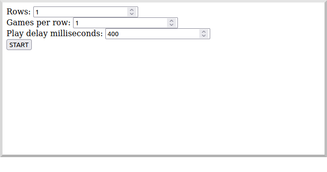
A single board is displayed:
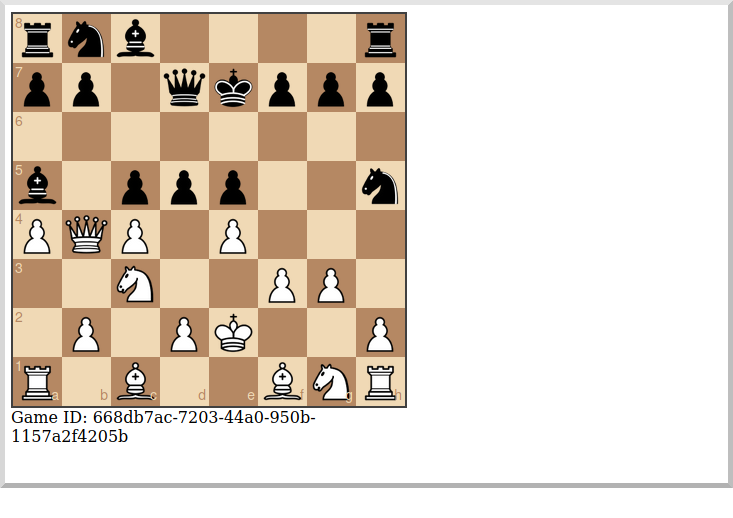
Or you can start multiple games with a short delay (or any combination you want):
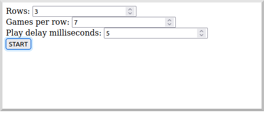
Multiple simultaneous boards are displayed:
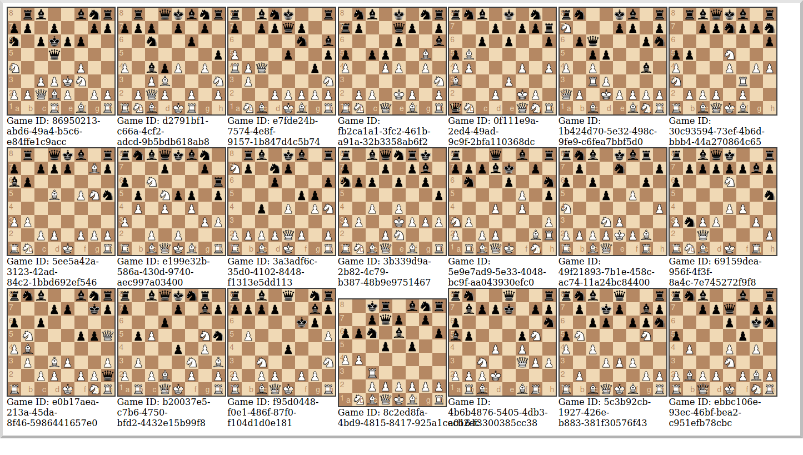
7. Moving to Oracle Cloud
7.1. Oracle Autonomous Database (ATP)
Update the chess-listener microservice to support Oracle in addition to the in-memory H2 database.
Use the Oracle Autonomous Database guide to provision an Oracle database at OCI.
7.1.1. Dependencies
Add the micronaut-oraclecloud-atp dependency to the chess-listener microservice to support using ATP:
build.gradle
implementation("io.micronaut.oraclecloud:micronaut-oraclecloud-atp")7.1.2. Configuration
Create src/main/resources/application-oraclecloud.properties. The Micronaut framework applies this configuration file only for the oraclecloud environment.
chess-listener/src/main/resources/application-oraclecloud.properties
(1)
datasources.default.ocid=
(2)
datasources.default.walletPassword=
datasources.default.username=micronautdemo
(3)
datasources.default.password=
(4)
oci.config.profile=DEFAULT
(5)
flyway.datasources.default.locations[0]=classpath:db/migration/oracle| 1 | Set the value of the ocid property with the database OCID unique identifier you saved when creating the database |
| 2 | Set the walletPassword property with a password to encrypt the wallet keys (must be at least 8 characters and include at least 1 letter and either 1 numeric or special character) |
| 3 | Set the password property with the micronautdemo schema user password you created |
| 4 | Change the profile name if you’re not using the default, and optionally add a value for the path to the config file if necessary as described in the Authentication section of the Micronaut Oracle Cloud docs |
| 5 | Configure Flyway to look for migration scripts in src/main/resources/db/migration/oracle |
7.1.3. Repositories
Create the OracleGameRepository interface that extends GameRepository and specifies the ORACLE dialect in the oraclecloud environment:
chess-listener/src/main/java/example/micronaut/chess/repository/OracleGameRepository.java
package example.micronaut.chess.repository;
import io.micronaut.context.annotation.Primary;
import io.micronaut.context.annotation.Requires;
import io.micronaut.data.jdbc.annotation.JdbcRepository;
import static io.micronaut.context.env.Environment.ORACLE_CLOUD;
import static io.micronaut.context.env.Environment.TEST;
import static io.micronaut.data.model.query.builder.sql.Dialect.ORACLE;
@Primary
@JdbcRepository(dialect = ORACLE) (1)
@Requires(env = {ORACLE_CLOUD, TEST}) (2)
public interface OracleGameRepository extends GameRepository {
}| 1 | Annotate with @JdbcRepository to make this a Micronaut Data JDBC repository, and specify the ORACLE dialect. The Micronaut framework will generate persistence logic at compile time and use Oracle-specific SQL. |
| 2 | Restrict the bean to be available only in the oraclecloud environment |
Create the OracleGameStateRepository interface that extends GameStateRepository:
chess-listener/src/main/java/example/micronaut/chess/repository/OracleGameStateRepository.java
package example.micronaut.chess.repository;
import io.micronaut.context.annotation.Primary;
import io.micronaut.context.annotation.Requires;
import io.micronaut.data.jdbc.annotation.JdbcRepository;
import static io.micronaut.context.env.Environment.ORACLE_CLOUD;
import static io.micronaut.context.env.Environment.TEST;
import static io.micronaut.data.model.query.builder.sql.Dialect.ORACLE;
@Primary
@JdbcRepository(dialect = ORACLE)
@Requires(env = {ORACLE_CLOUD, TEST})
public interface OracleGameStateRepository extends GameStateRepository {
}7.1.4. Flyway
Create a database migration script to create the Oracle database tables:
chess-listener/src/main/resources/db/migration/oracle/V1__create-schema.sql
CREATE TABLE game (
id CHAR(36) PRIMARY KEY,
black_name VARCHAR2(255) NOT NULL,
white_name VARCHAR2(255) NOT NULL,
date_created TIMESTAMP NOT NULL,
date_updated TIMESTAMP NOT NULL,
draw NUMBER(3) NOT NULL,
winner CHAR(1)
);
CREATE TABLE game_state (
id CHAR(36) PRIMARY KEY,
game_id CHAR(36) NOT NULL,
date_created TIMESTAMP NOT NULL,
player CHAR(1) NOT NULL,
fen VARCHAR2(100) NOT NULL,
pgn CLOB NOT NULL,
move VARCHAR2(10) NOT NULL,
CONSTRAINT fk_game_state_game FOREIGN KEY (game_id) REFERENCES game(id)
);7.2. Oracle Cloud Streaming
Up to now, we’ve been using a local Kafka, but let’s configure the equivalent infrastructure in OCI. This will involve minimal application changes thanks to the ability to send and receive Cloud Streaming messages using Kafka APIs, and Micronaut support for Kafka.
7.2.1. Stream Pool and Streams
Log in to your Oracle Cloud tenancy and from the Oracle Cloud Menu, select "Analytics & AI" and then "Streaming":
Choose the compartment to create the streams in, then click "Create Stream Pool":
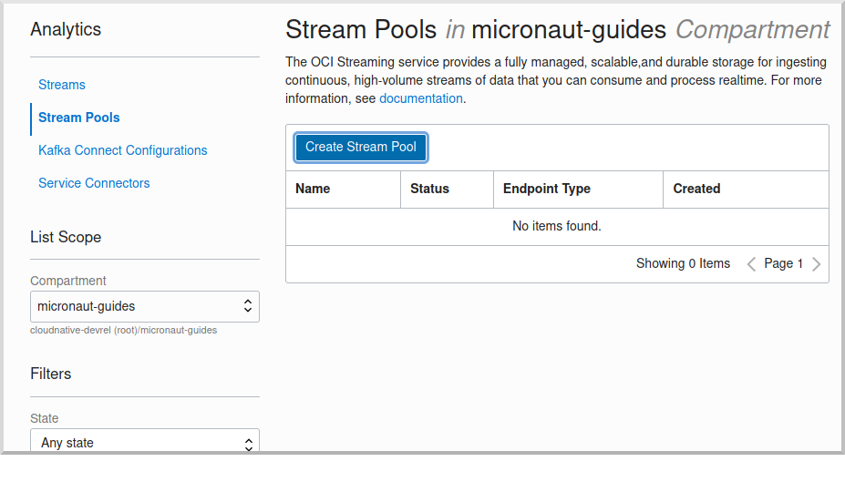
Enter a name for the pool, e.g., "mn-guide-pool", and click "Create":
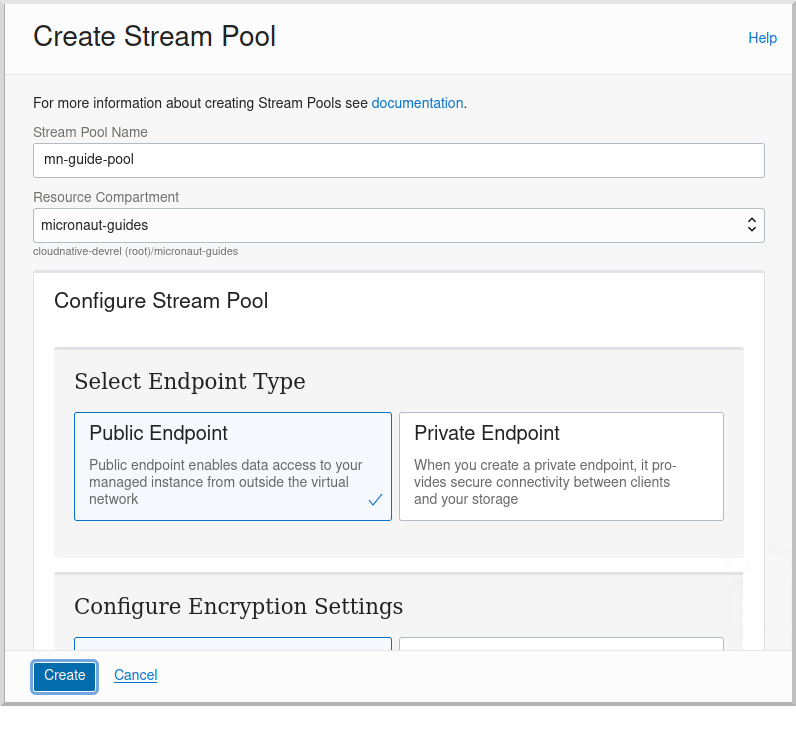
Click the "Copy" link in the OCID row and save the value for later. Also save the "FQDN" URL. Click "Create Stream":
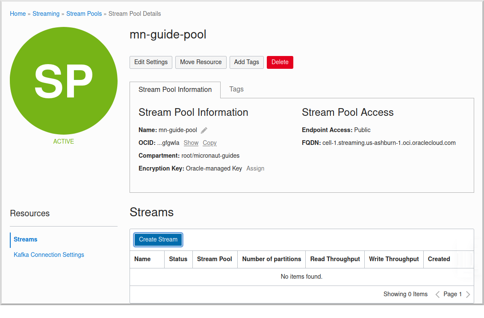
Create two streams within the pool you created with the Topic names used in the microservices. First create "chessGame":
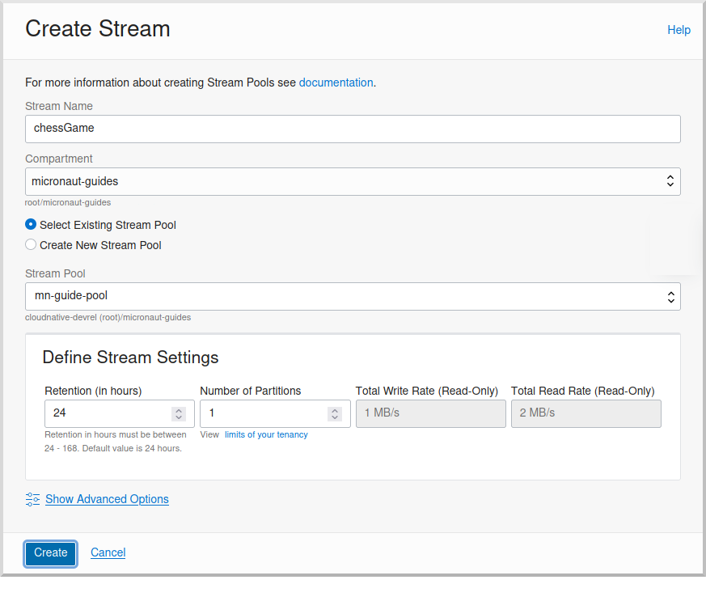
and then create "chessGameState":
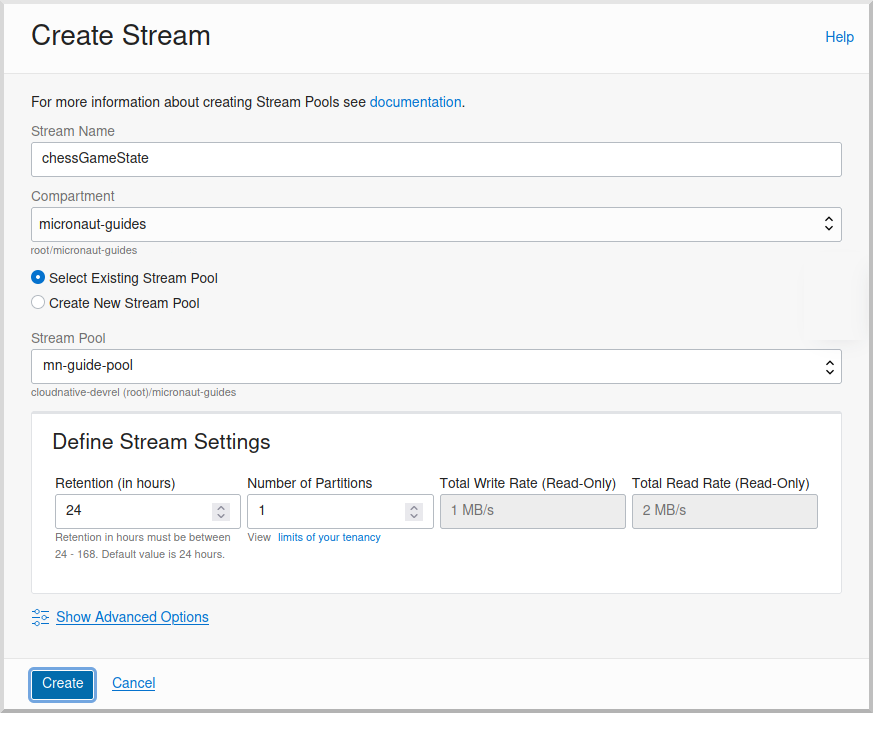
7.2.2. User and Group
Create a group for the streams by clicking the Oracle Cloud menu and selecting "Identity & Security" and then click "Groups":
Click "Create Group":
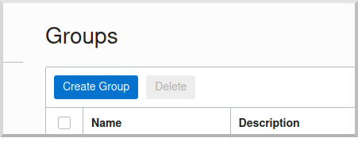
Choose a name and a description, e.g., "mn-guide-streaming-group", and click "Create":
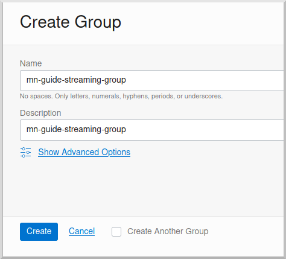
Create a user by clicking the Oracle Cloud menu and selecting "Identity & Security" and then click "Users":
Click "Create User":
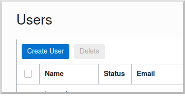
Choose a name and a description, e.g., "mn-guide-streaming-user", and click "Create":
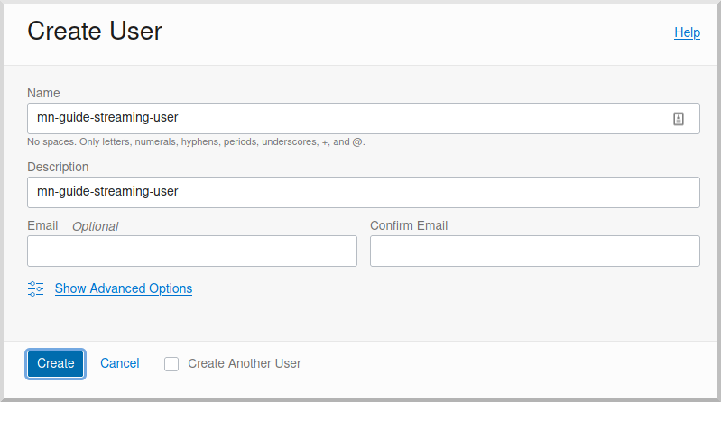
Scroll down and click "Add User to Group":
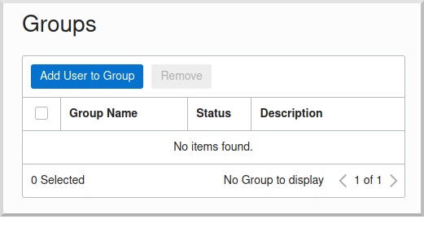
Select the group you created and click "Add":
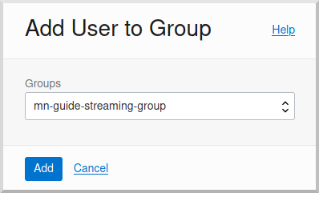
You’ll need an auth token to use as the password in the Micronaut Kafka configuration. Click "Auth Tokens" and then "Generate Token":
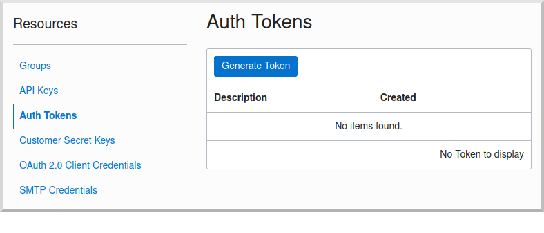
Enter a name for the token, e.g., "mn-guide-streaming", and click "Generate Token":
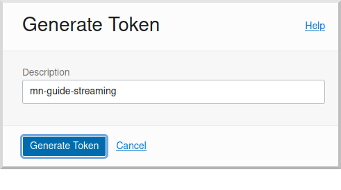
Copy the token to the clipboard and save it for later:
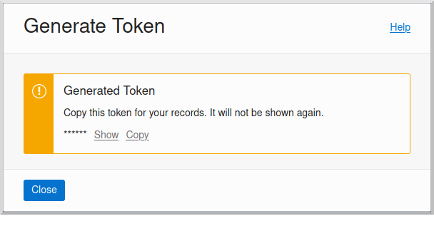
See the Groups and Users docs for more information.
7.2.3. Policy
Create a policy to grant various Streams access to the user and group you created.
Open the Oracle Cloud Menu and click "Identity & Security" and then "Policies":
Select the compartment where you created the streams from the dropdown and click "Create Policy":
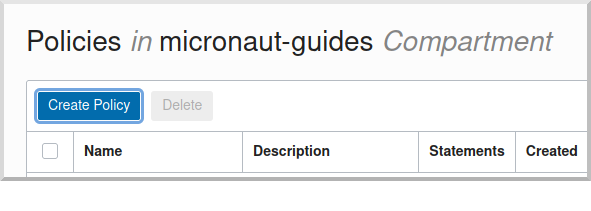
Choose a name and description, e.g., "mn-guide-streaming-policy", and click "Show Manual Editor". Copy the following and paste it into the "Policy Builder" field, replacing "micronaut-guides" with the name of the compartment you’re using, and click "Create":
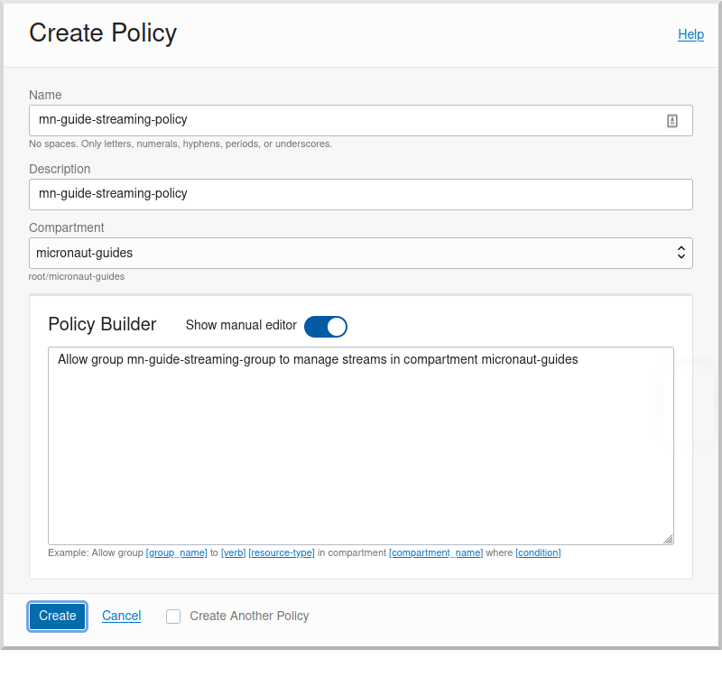
7.2.4. Application configuration
Create src/main/resources/application-oraclecloud.properties in the chess-game microservice. Add the following there, and also add it to the application-oraclecloud.properties you already created in the chess-listener microservice:
chess-game/src/main/resources/application-oraclecloud.properties
(1)
kafka.bootstrap.servers=
kafka.security.protocol=SASL_SSL
kafka.sasl.mechanism=PLAIN
(2)
kafka.sasl.jaas.config=
kafka.retries=3
(3)
kafka.max.request.size=1048576
(4)
kafka.max.partition.fetch.bytes=1048576| 1 | Use the "FQDN" URL value you saved earlier here, along with the Kafka port (9092), e.g., cell-1.streaming.us-ashburn-1.oci.oraclecloud.com:9092 |
| 2 | Use the value config: org.apache.kafka.common.security.plain.PlainLoginModule required username="<tenancy-name>/<username>/<stream-pool-ocid>" password="<auth-token>";, replacing <tenancy-name> with the name of your tenancy, <username> with the username created above, <stream-pool-ocid> with the OCID of the stream pool you saved earlier, and <auth-token> with the auth token value you saved earlier. |
| 3 | Limit request size to 1MB |
| 4 | Limit request size to 1MB per partition |
8. Local Testing with Cloud Resources
You can now start both microservices in the oraclecloud environment to use Cloud Streaming and the ATP database you created:
To run each application use:
MICRONAUT_ENVIRONMENTS=oraclecloud ./gradlew runor if you use Windows:
cmd /C "set MICRONAUT_ENVIRONMENTS=oraclecloud && gradlew run"9. Writing Tests
We’ll run Kafka inside a Docker container using Testcontainers for both application tests and also run Oracle database inside a Docker container for testing persistence in the chess-listener tests.
9.1. chess-game tests
Create a test in the chess-game microservice to verify that Kafka message processing works:
chess-game/src/test/java/example/micronaut/GameReporterTest.java
package example.micronaut;
import example.micronaut.chess.dto.Player;
import example.micronaut.chess.dto.GameDTO;
import example.micronaut.chess.dto.GameStateDTO;
import io.micronaut.configuration.kafka.annotation.KafkaListener;
import io.micronaut.configuration.kafka.annotation.Topic;
import io.micronaut.core.annotation.NonNull;
import io.micronaut.core.type.Argument;
import io.micronaut.http.HttpRequest;
import io.micronaut.http.client.HttpClient;
import io.micronaut.http.client.annotation.Client;
import io.micronaut.test.extensions.junit5.annotation.MicronautTest;
import io.micronaut.test.support.TestPropertyProvider;
import org.junit.jupiter.api.AfterEach;
import org.junit.jupiter.api.Test;
import org.junit.jupiter.api.TestInstance;
import org.testcontainers.kafka.KafkaContainer;
import org.testcontainers.junit.jupiter.Container;
import org.testcontainers.junit.jupiter.Testcontainers;
import org.testcontainers.utility.DockerImageName;
import jakarta.inject.Inject;
import java.util.ArrayList;
import java.util.Collection;
import java.util.Collections;
import java.util.HashMap;
import java.util.List;
import java.util.Map;
import java.util.Optional;
import java.util.concurrent.ConcurrentLinkedDeque;
import java.net.URI;
import io.micronaut.http.uri.UriBuilder;
import static io.micronaut.configuration.kafka.annotation.OffsetReset.EARLIEST;
import static io.micronaut.http.MediaType.APPLICATION_FORM_URLENCODED_TYPE;
import static java.util.concurrent.TimeUnit.SECONDS;
import static org.awaitility.Awaitility.await;
import static org.junit.jupiter.api.Assertions.assertEquals;
import static org.junit.jupiter.api.Assertions.assertFalse;
import static org.junit.jupiter.api.Assertions.assertNull;
import static org.junit.jupiter.api.Assertions.assertTrue;
import static org.junit.jupiter.api.TestInstance.Lifecycle.PER_CLASS;
@Testcontainers (1)
@MicronautTest
@TestInstance(PER_CLASS) (2)
class GameReporterTest implements TestPropertyProvider { (3)
private static final Collection<GameDTO> receivedGames = new ConcurrentLinkedDeque<>();
private static final Collection<GameStateDTO> receivedMoves = new ConcurrentLinkedDeque<>();
@Container
static KafkaContainer kafka = new KafkaContainer(
DockerImageName.parse("apache/kafka:latest")); (4)
@Inject
ChessListener chessListener; (5)
@Inject
@Client("/")
HttpClient client; (6)
@Test
void testGameEndingInCheckmate() {
String blackName = "b_name";
String whiteName = "w_name";
// start game
Optional<String> result = startGame(blackName, whiteName);
String gameId = result.orElseThrow(() -> new RuntimeException("Expected GameDTO id"));
await().atMost(5, SECONDS).until(() -> !receivedGames.isEmpty()); (7)
assertEquals(1, receivedGames.size());
assertEquals(0, receivedMoves.size());
GameDTO game = receivedGames.iterator().next();
assertEquals(gameId, game.getId());
assertEquals(blackName, game.getBlackName());
assertEquals(whiteName, game.getWhiteName());
assertFalse(game.isDraw());
assertNull(game.getWinner());
// make moves
receivedGames.clear();
makeMove(gameId, Player.WHITE, "f3", "rnbqkbnr/pppppppp/8/8/8/5P2/PPPPP1PP/RNBQKBNR b KQkq - 0 1", "1. f3");
makeMove(gameId, Player.BLACK, "e6", "rnbqkbnr/pppp1ppp/4p3/8/8/5P2/PPPPP1PP/RNBQKBNR w KQkq - 0 2", "1. f3 e6");
makeMove(gameId, Player.WHITE, "g4", "rnbqkbnr/pppp1ppp/4p3/8/6P1/5P2/PPPPP2P/RNBQKBNR b KQkq g3 0 2", "1. f3 e6 2. g4");
makeMove(gameId, Player.BLACK, "Qh4#", "rnb1kbnr/pppp1ppp/4p3/8/6Pq/5P2/PPPPP2P/RNBQKBNR w KQkq - 1 3", "1. f3 e6 2. g4 Qh4#");
await().atMost(5, SECONDS).until(() -> receivedMoves.size() > 3);
assertEquals(0, receivedGames.size());
assertEquals(4, receivedMoves.size());
List<GameStateDTO> moves = new ArrayList<>(receivedMoves);
assertEquals(Player.WHITE, moves.get(0).getPlayer());
assertEquals("f3", moves.get(0).getMove());
assertEquals(Player.BLACK, moves.get(1).getPlayer());
assertEquals("e6", moves.get(1).getMove());
assertEquals(Player.WHITE, moves.get(2).getPlayer());
assertEquals("g4", moves.get(2).getMove());
assertEquals(Player.BLACK, moves.get(3).getPlayer());
assertEquals("Qh4#", moves.get(3).getMove());
// end game
receivedMoves.clear();
endGame(gameId, Player.BLACK);
await().atMost(5, SECONDS).until(() -> !receivedGames.isEmpty());
assertEquals(1, receivedGames.size());
assertEquals(0, receivedMoves.size());
game = receivedGames.iterator().next();
assertEquals(gameId, game.getId());
assertNull(game.getBlackName());
assertNull(game.getWhiteName());
assertFalse(game.isDraw());
assertEquals(Player.BLACK, game.getWinner());
}
@Test
void testGameEndingInDraw() {
String blackName = "b_name";
String whiteName = "w_name";
// start game
Optional<String> result = startGame(blackName, whiteName);
String gameId = result.orElseThrow(() -> new RuntimeException("Expected GameDTO id"));
await().atMost(5, SECONDS).until(() -> !receivedGames.isEmpty());
assertEquals(1, receivedGames.size());
assertEquals(0, receivedMoves.size());
GameDTO game = receivedGames.iterator().next();
assertEquals(gameId, game.getId());
assertEquals(blackName, game.getBlackName());
assertEquals(whiteName, game.getWhiteName());
assertFalse(game.isDraw());
assertNull(game.getWinner());
// make moves
receivedGames.clear();
makeMove(gameId, Player.WHITE, "f3", "rnbqkbnr/pppppppp/8/8/8/5P2/PPPPP1PP/RNBQKBNR b KQkq - 0 1", "1. f3");
makeMove(gameId, Player.BLACK, "e6", "rnbqkbnr/pppp1ppp/4p3/8/8/5P2/PPPPP1PP/RNBQKBNR w KQkq - 0 2", "1. f3 e6");
await().atMost(5, SECONDS).until(() -> receivedMoves.size() > 1);
assertEquals(0, receivedGames.size());
assertEquals(2, receivedMoves.size());
// end game
receivedMoves.clear();
endGame(gameId, null);
await().atMost(5, SECONDS).until(() -> !receivedGames.isEmpty());
assertEquals(1, receivedGames.size());
assertEquals(0, receivedMoves.size());
game = receivedGames.iterator().next();
assertEquals(gameId, game.getId());
assertNull(game.getBlackName());
assertNull(game.getWhiteName());
assertTrue(game.isDraw());
assertNull(game.getWinner());
}
@NonNull
@Override
public Map<String, String> getProperties() {
return Collections.singletonMap(
"kafka.bootstrap.servers", kafka.getBootstrapServers() (8)
);
}
@AfterEach
void cleanup() {
receivedGames.clear();
receivedMoves.clear();
}
@KafkaListener(offsetReset = EARLIEST)
static class ChessListener {
@Topic("chessGame")
void onGame(GameDTO game) {
receivedGames.add(game);
}
@Topic("chessGameState")
void onGameState(GameStateDTO gameState) {
receivedMoves.add(gameState);
}
}
private Optional<String> startGame(String blackName, String whiteName) {
Map<String, String> body = new HashMap<>(); (9)
body.put(Player.BLACK.toString(), blackName);
body.put(Player.WHITE.toString(), whiteName);
HttpRequest<?> request = HttpRequest.POST("/game/start", body)
.contentType(APPLICATION_FORM_URLENCODED_TYPE);
return client.toBlocking().retrieve(request,
Argument.of(Optional.class, String.class)); (10)
}
private void makeMove(String gameId, Player player, String move,
String fen, String pgn) {
Map<String, String> body = new HashMap<>();
body.put("player", player.toString());
body.put("move", move);
body.put("fen", fen);
body.put("pgn", pgn);
HttpRequest<?> request = HttpRequest.POST("/game/move/" + gameId, body)
.contentType(APPLICATION_FORM_URLENCODED_TYPE);
client.toBlocking().exchange(request); (11)
}
private void endGame(String gameId, Player winner) {
UriBuilder uriBuilder = UriBuilder.of("/game").path(winner == null ? "draw" : "checkmate").path(gameId);
if (winner != null) {
uriBuilder = uriBuilder.path(winner.toString());
}
URI uri = uriBuilder.build();
HttpRequest<?> request = HttpRequest.POST(uri, null);
client.toBlocking().exchange(request); (12)
}
}| 1 | Use the @Testcontainers annotation to configure automatic container management (not necessary in Spock tests) |
| 2 | Classes that implement TestPropertyProvider must use this annotation to create a single class instance for all tests (not necessary in Spock tests). |
| 3 | Implementing TestPropertyProvider allows the test class to provide application configuration properties, in this case the dynamically allocated Kafka broker port |
| 4 | The Testcontainers instance for Kafka |
| 5 | Dependency injection for the ChessListener class declared below, a Kafka listener class that replicates the functionality of the class of the same name in the chess-listener microservice |
| 6 | Dependency injection for an HTTP client that the Micronaut framework will implement at compile time to make calls to GameController |
| 7 | Wait a few seconds for the message to arrive; it should happen very quickly, but the message will be sent on a separate thread |
| 8 | Configure the Kafka broker port (it will be different unused port each time) so Micronaut Kafka clients and listeners connect to the test broker |
| 9 | Use a Map to hold form parameter names and values |
| 10 | Use the HttpClient to send a POST request that indicates a game has started, which will trigger sending a message with Kafka |
| 11 | Use the HttpClient to send a POST request that indicates a game move has occurred, which will trigger sending a message with Kafka |
| 12 | Use the HttpClient to send a POST request that indicates a game has ended (in either a draw or checkmate), which will trigger sending a message with Kafka |
9.2. chess-listener tests
Create a test in the chess-listener microservice to verify that Kafka message processing and database persistence works:
chess-listener/src/test/java/example/micronaut/GameServiceTest.java
package example.micronaut;
import example.micronaut.chess.dto.Player;
import example.micronaut.chess.dto.GameDTO;
import example.micronaut.chess.dto.GameStateDTO;
import example.micronaut.chess.entity.Game;
import example.micronaut.chess.entity.GameState;
import example.micronaut.chess.repository.GameRepository;
import example.micronaut.chess.repository.GameStateRepository;
import io.micronaut.configuration.kafka.annotation.KafkaClient;
import io.micronaut.configuration.kafka.annotation.KafkaKey;
import io.micronaut.configuration.kafka.annotation.Topic;
import io.micronaut.core.annotation.NonNull;
import io.micronaut.test.extensions.junit5.annotation.MicronautTest;
import io.micronaut.test.support.TestPropertyProvider;
import org.junit.jupiter.api.AfterEach;
import org.junit.jupiter.api.Test;
import org.junit.jupiter.api.TestInstance;
import org.testcontainers.kafka.KafkaContainer;
import org.testcontainers.junit.jupiter.Container;
import org.testcontainers.junit.jupiter.Testcontainers;
import org.testcontainers.utility.DockerImageName;
import reactor.core.publisher.Mono;
import jakarta.inject.Inject;
import java.util.ArrayList;
import java.util.Collections;
import java.util.List;
import java.util.Map;
import java.util.UUID;
import static java.util.concurrent.TimeUnit.SECONDS;
import static org.awaitility.Awaitility.await;
import static org.junit.jupiter.api.Assertions.assertEquals;
import static org.junit.jupiter.api.Assertions.assertFalse;
import static org.junit.jupiter.api.Assertions.assertNull;
import static org.junit.jupiter.api.Assertions.assertTrue;
import static org.junit.jupiter.api.TestInstance.Lifecycle.PER_CLASS;
@Testcontainers (1)
@MicronautTest
@TestInstance(PER_CLASS) (2)
class GameServiceTest implements TestPropertyProvider { (3)
@Container
static KafkaContainer kafka = new KafkaContainer(
DockerImageName.parse("apache/kafka:latest")); (4)
@Inject
GameReporter gameReporter; (5)
@Inject
GameRepository gameRepository;
@Inject
GameStateRepository gameStateRepository;
@Test
void testGameEndingInCheckmate() {
String blackName = "b_name";
String whiteName = "w_name";
// start game
UUID gameId = UUID.randomUUID();
String gameIdString = gameId.toString();
GameDTO gameDto = new GameDTO(gameIdString, blackName, whiteName);
gameReporter.game(gameIdString, gameDto).subscribe();
await().atMost(5, SECONDS).until(() -> gameRepository.count() > 0); (6)
assertEquals(1, gameRepository.count());
assertEquals(0, gameStateRepository.count());
Game game = gameRepository.findById(gameId).orElseThrow(() ->
new IllegalStateException("Unable to find expected Game"));
assertEquals(gameId, game.getId());
assertEquals(blackName, game.getBlackName());
assertEquals(whiteName, game.getWhiteName());
assertFalse(game.isDraw());
assertNull(game.getWinner());
// make moves
List<UUID> gameStateIds = new ArrayList<>();
UUID gameStateId = makeMove(gameIdString, Player.WHITE, "f3", "rnbqkbnr/pppppppp/8/8/8/5P2/PPPPP1PP/RNBQKBNR b KQkq - 0 1", "1. f3");
gameStateIds.add(gameStateId);
gameStateId = makeMove(gameIdString, Player.BLACK, "e6", "rnbqkbnr/pppp1ppp/4p3/8/8/5P2/PPPPP1PP/RNBQKBNR w KQkq - 0 2", "1. f3 e6");
gameStateIds.add(gameStateId);
gameStateId = makeMove(gameIdString, Player.WHITE, "g4", "rnbqkbnr/pppp1ppp/4p3/8/6P1/5P2/PPPPP2P/RNBQKBNR b KQkq g3 0 2", "1. f3 e6 2. g4");
gameStateIds.add(gameStateId);
gameStateId = makeMove(gameIdString, Player.BLACK, "Qh4#", "rnb1kbnr/pppp1ppp/4p3/8/6Pq/5P2/PPPPP2P/RNBQKBNR w KQkq - 1 3", "1. f3 e6 2. g4 Qh4#");
gameStateIds.add(gameStateId);
await().atMost(5, SECONDS).until(() -> gameStateRepository.count() > 3);
assertEquals(1, gameRepository.count());
assertEquals(4, gameStateRepository.count());
List<GameState> moves = new ArrayList<>();
for (UUID id : gameStateIds) {
moves.add(gameStateRepository.findById(id).orElseThrow(() ->
new IllegalStateException("Unable to find expected GameState")));
}
assertEquals(Player.WHITE, moves.get(0).getPlayer());
assertEquals("f3", moves.get(0).getMove());
assertEquals(Player.BLACK, moves.get(1).getPlayer());
assertEquals("e6", moves.get(1).getMove());
assertEquals(Player.WHITE, moves.get(2).getPlayer());
assertEquals("g4", moves.get(2).getMove());
assertEquals(Player.BLACK, moves.get(3).getPlayer());
assertEquals("Qh4#", moves.get(3).getMove());
// end game
gameDto = new GameDTO(gameIdString, false, Player.BLACK);
gameReporter.game(gameIdString, gameDto).subscribe();
await().atMost(5, SECONDS).until(() -> {
Game g = gameRepository.findById(gameId).orElse(null);
if (g == null) return false;
return g.getWinner() != null;
});
assertEquals(1, gameRepository.count());
assertEquals(4, gameStateRepository.count());
game = gameRepository.findById(gameId).orElseThrow(() ->
new IllegalStateException("Unable to find expected Game"));
assertEquals(gameId, game.getId());
assertEquals(blackName, game.getBlackName());
assertEquals(whiteName, game.getWhiteName());
assertFalse(game.isDraw());
assertEquals(Player.BLACK, game.getWinner());
}
@Test
void testGameEndingInDraw() {
String blackName = "b_name";
String whiteName = "w_name";
// start game
UUID gameId = UUID.randomUUID();
String gameIdString = gameId.toString();
GameDTO gameDto = new GameDTO(gameIdString, blackName, whiteName);
gameReporter.game(gameIdString, gameDto).subscribe();
await().atMost(5, SECONDS).until(() -> gameRepository.count() > 0);
assertEquals(1, gameRepository.count());
assertEquals(0, gameStateRepository.count());
Game game = gameRepository.findById(gameId).orElseThrow(() ->
new IllegalStateException("Unable to find expected Game"));
assertEquals(gameId, game.getId());
assertEquals(blackName, game.getBlackName());
assertEquals(whiteName, game.getWhiteName());
assertFalse(game.isDraw());
assertNull(game.getWinner());
// make moves
List<UUID> gameStateIds = new ArrayList<>();
UUID gameStateId = makeMove(gameIdString, Player.WHITE, "f3", "rnbqkbnr/pppppppp/8/8/8/5P2/PPPPP1PP/RNBQKBNR b KQkq - 0 1", "1. f3");
gameStateIds.add(gameStateId);
gameStateId = makeMove(gameIdString, Player.BLACK, "e6", "rnbqkbnr/pppp1ppp/4p3/8/8/5P2/PPPPP1PP/RNBQKBNR w KQkq - 0 2", "1. f3 e6");
gameStateIds.add(gameStateId);
await().atMost(5, SECONDS).until(() -> gameStateRepository.count() > 1);
assertEquals(1, gameRepository.count());
assertEquals(2, gameStateRepository.count());
List<GameState> moves = new ArrayList<>();
for (UUID id : gameStateIds) {
moves.add(gameStateRepository.findById(id).orElseThrow(() ->
new IllegalStateException("Unable to find expected GameState")));
}
assertEquals(Player.WHITE, moves.get(0).getPlayer());
assertEquals("f3", moves.get(0).getMove());
assertEquals(Player.BLACK, moves.get(1).getPlayer());
assertEquals("e6", moves.get(1).getMove());
// end game
gameDto = new GameDTO(gameIdString, true, null);
gameReporter.game(gameIdString, gameDto).subscribe();
await().atMost(5, SECONDS).until(() -> {
Game g = gameRepository.findById(gameId).orElse(null);
if (g == null) return false;
return g.isDraw();
});
assertEquals(1, gameRepository.count());
assertEquals(2, gameStateRepository.count());
game = gameRepository.findById(gameId).orElseThrow(() ->
new IllegalStateException("Unable to find expected Game"));
assertEquals(gameId, game.getId());
assertEquals(blackName, game.getBlackName());
assertEquals(whiteName, game.getWhiteName());
assertTrue(game.isDraw());
assertNull(game.getWinner());
}
@NonNull
@Override
public Map<String, String> getProperties() {
return Collections.singletonMap(
"kafka.bootstrap.servers", kafka.getBootstrapServers() (7)
);
}
@AfterEach
void cleanup() {
gameStateRepository.deleteAll();
gameRepository.deleteAll();
}
@KafkaClient
interface GameReporter {
@Topic("chessGame")
Mono<GameDTO> game(@KafkaKey String gameId, GameDTO game);
@Topic("chessGameState")
Mono<GameStateDTO> gameState(@KafkaKey String gameId, GameStateDTO gameState);
}
private UUID makeMove(String gameId,
Player player,
String move,
String fen,
String pgn) {
UUID gameStateId = UUID.randomUUID();
gameReporter.gameState(gameId, new GameStateDTO(gameStateId.toString(),
gameId, player, move, fen, pgn)).subscribe();
return gameStateId;
}
}| 1 | Use the @Testcontainers annotation to configure automatic container management (not necessary in Spock tests) |
| 2 | Classes that implement TestPropertyProvider must use this annotation to create a single class instance for all tests (not necessary in Spock tests). |
| 3 | Implementing TestPropertyProvider allows the test class to provide application configuration properties, in this case the dynamically allocated Kafka broker port |
| 4 | The Testcontainers instance for Kafka |
| 5 | Dependency injection for the GameReporter interface declared below, a Kafka producer interface that replicates the functionality of the class of the same name in the chess-game microservice |
| 6 | Wait a few seconds for the message to arrive; it should happen very quickly, but the message will be sent on a separate thread |
| 7 | Configure the Kafka broker port (it will be different unused port each time) so Micronaut Kafka clients and listeners connect to the test broker |
Create application-test.properties file in src/test/resources with this content:
chess-listener/src/test/resources/application-test.properties
datasources.default.url=jdbc:tc:oracle:thin:@/xe
datasources.default.driverClassName=org.testcontainers.jdbc.ContainerDatabaseDriver
datasources.default.username=system
datasources.default.password=oracle
flyway.datasources.default.locations=classpath:db/migration/oracle
flyway.datasources.default.baseline-version=0
flyway.datasources.default.baseline-on-migrate=true9.3. Running the tests
To run the tests:
./gradlew testThen open build/reports/tests/test/index.html in a browser to see the results.
10. Deploy to OCI
Once you’ve verified that the microservices work with the configured cloud resources, you can deploy the microservices to Compute instances and run everything in Oracle Cloud.
Follow the steps in this guide for each service.
10.1. Instance Principal authentication
The current configuration in application-oraclecloud.properties works when running locally using OCI resources (ATP database and Cloud Streams) but won’t work when deploying the application because it doesn’t make sense to install the Oracle Cloud CLI in Compute instances. Instead, we’ll use Instance Principal authentication.
To use this, we need to update the config, create a dynamic group, and add policy statements granting permissions.
10.1.1. Dynamic Group
Create a Dynamic Group by clicking the Oracle Cloud menu and selecting "Identity & Security" and then click "Dynamic Groups":
Click "Create Dynamic Group":
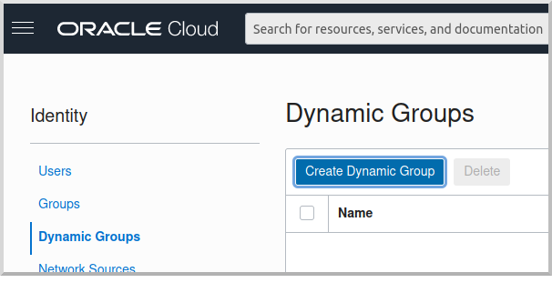
Then enter a name and description for the group, e.g., "mn-streaming-guide-dg", and a matching rule, i.e., the logic that will be used to determine group membership. We’ll make the rule fairly broad - enter ALL {instance.compartment.id = 'ocid1.compartment.oc1..aaaaaxxxxx'} replacing ocid1.compartment.oc1..aaaaaxxxxx with the compartment OCID where you’re creating your Compute instances and click "Create":
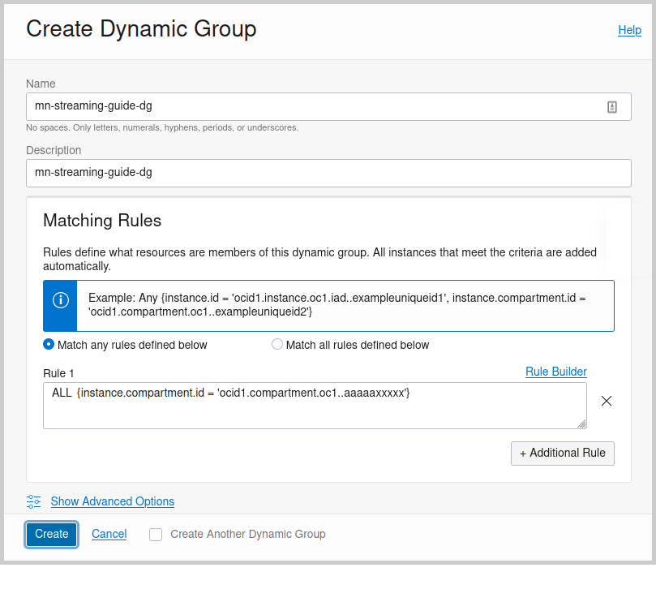
See the Dynamic Group docs for more information.
10.1.2. Dynamic Group Policy Statements
Edit the policy you created earlier and add three new policies: one to grant access to Autonomous Database, one to allow sending stream messages, and one to allow receiving stream messages:
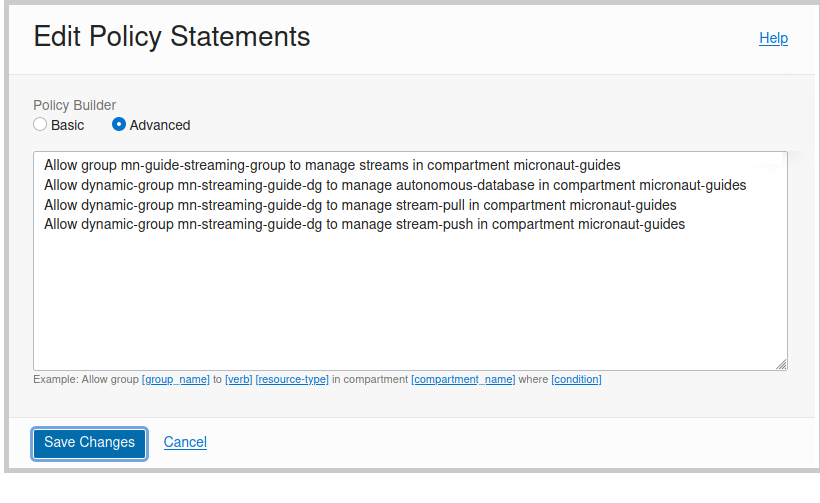
10.1.3. Configuration
Edit application-oraclecloud.properties in the chess-listener microservice and replace
oci:
config:
profile: DEFAULTwith
oci:
config:
instance-principal:
enabled: true11. Generate Micronaut Application Native Executables with GraalVM
We will use GraalVM, an advanced JDK with ahead-of-time Native Image compilation, to generate a native executable of this Micronaut application.
Compiling Micronaut applications ahead of time with GraalVM significantly improves startup time and reduces the memory footprint of JVM-based applications.
Only Java and Kotlin projects support using GraalVM’s native-image tool. Groovy relies heavily on reflection, which is only partially supported by GraalVM.
|
11.1. Native Executable Generation
Java 21
sdk install java 21.0.5-graalFor installation on Windows, or for a manual installation on Linux or Mac, see the GraalVM Getting Started documentation.
The previous command installs Oracle GraalVM, which is free to use in production and free to redistribute, at no cost, under the GraalVM Free Terms and Conditions.
Alternatively, you can use the GraalVM Community Edition:
Java 21
sdk install java 21.0.2-graalceTo generate native executables for each application using Gradle, run:
./gradlew nativeCompileThe native executables are created in build/native/nativeCompile directory and can be run with build/native/nativeCompile/micronautguide.
It is possible to customize the name of a native executable or pass additional parameters to GraalVM:
build.gradle
graalvmNative {
binaries {
main {
imageName.set('mn-graalvm-application') (1)
buildArgs.add('-Ob') (2)
}
}
}| 1 | The native executable name will now be mn-graalvm-application |
| 2 | It is possible to pass extra build arguments to native-image. For example, -Ob enables the quick build mode. |
| Native executable building will fail if the H2 driver is in the classpath, so comment out that dependency in your build script before building. No other changes are needed since there are no compile dependencies on the library, so you can keep the H2 versions of the repository interfaces for use in dev mode. |
11.2. Deployable Native Executables
The native executables you built probably won’t be deployable to OCI even if you build on the same Linux distro your Compute instances use. To create deployable native executables, change the build process a bit.
To generate deployable native executables for each application using Gradle, run:
./gradlew dockerBuildNativeThen you just need to extract the native executable applications from the Docker images you built.
You’ll need the Docker image IDs, so run:
docker image lsThe output should look like this:
REPOSITORY TAG IMAGE ID CREATED SIZE
chess-listener latest 0e262e1754a7 32 seconds ago 246MB
chess-game latest 43f567f2fed6 39 minutes ago 86.1MB
confluentinc/cp-kafka latest ca0dbcd0244c 2 weeks ago 771MB
confluentinc/cp-zookeeper latest 04999d93068f 2 weeks ago 771MB
ghcr.io/graalvm/graalvm-ce java11-21.1.0 9762c6e631f0 2 months ago 1.29GB
ghcr.io/graalvm/graalvm-ce java8-21.1.0 aef3649e379d 2 months ago 1.12GB
frolvlad/alpine-glibc alpine-3.12 39c4d33bd807 2 months ago 17.9MB
portainer/portainer latest cd645f5a4769 13 months ago 79.1MBThe IDs should be at the top since they’re the most recent.
Then run this for each image, replacing image_id with the Docker image ID, e.g., 0e262e1754a7 and 43f567f2fed6:
docker create --name container_temp <image_id>
docker cp container_temp:/app/application .
docker rm container_tempNow you can scp each native executable to a Compute instance with no Java installed and see the startup time and resource usage reduction you expect when running applications as native executables.
12. Next Steps
Read more about Kafka support in the Micronaut framework.
13. License
| All guides are released with an Apache license 2.0 license for the code and a Creative Commons Attribution 4.0 license for the writing and media (images…). |